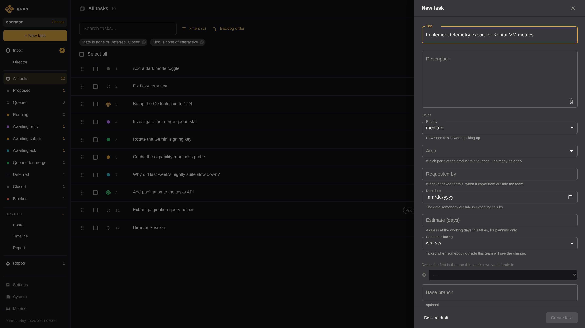
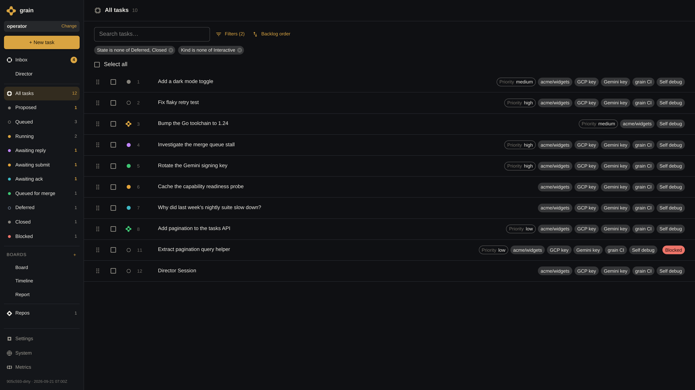
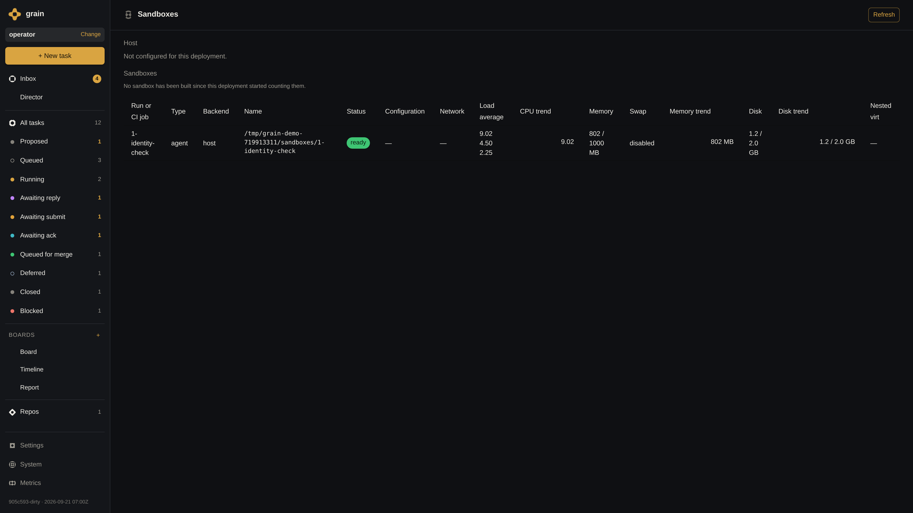
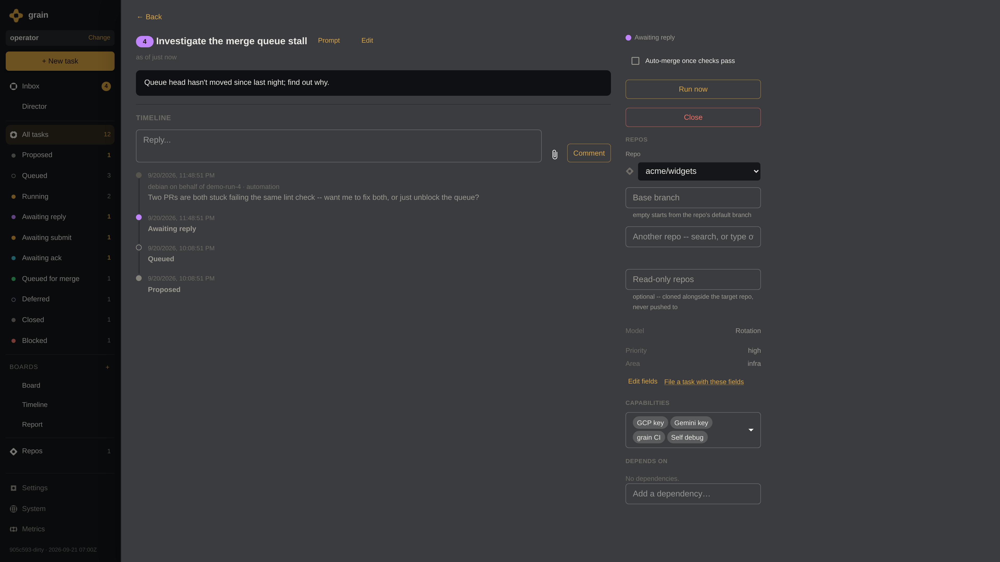
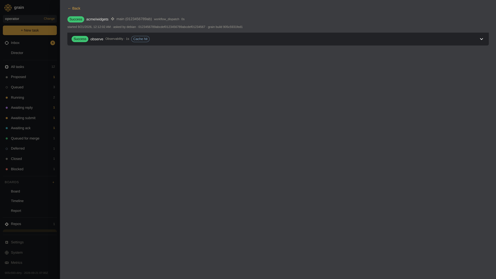
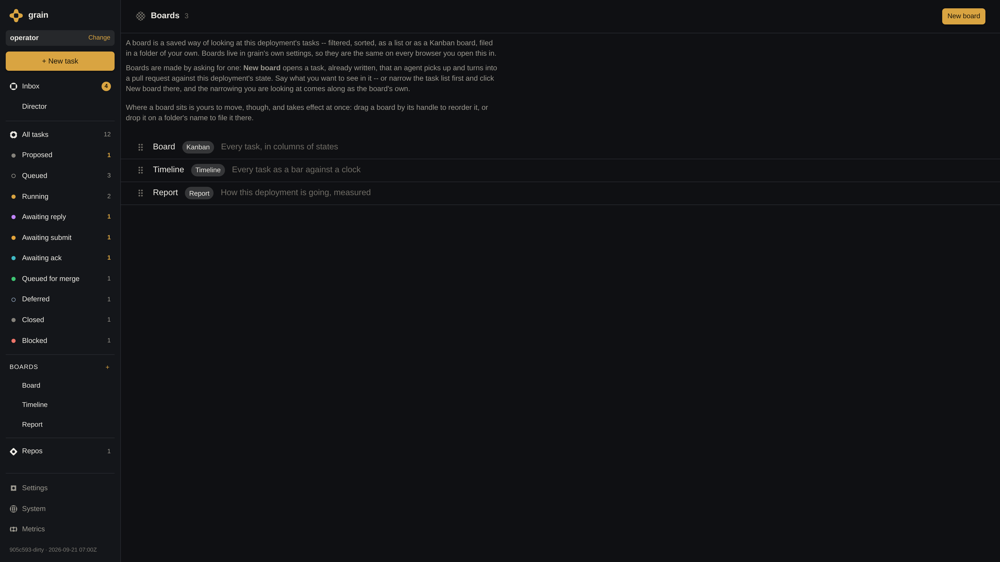
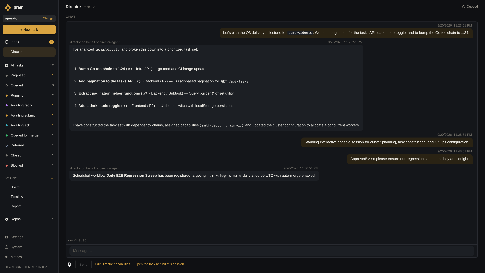
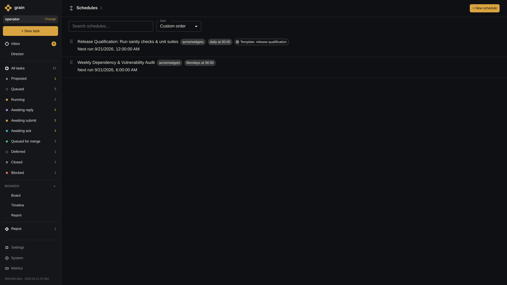
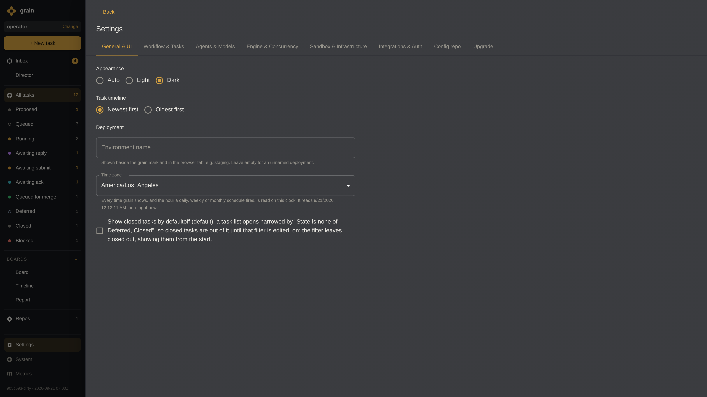

Create a Task
Structured task definition with granular capability assignment and auto-merge controls.
- Granular Task Specification: Operators define task title, instructions, target repository, priority tier (P0–P3), and area tags.
- Least-Privilege Capabilities: Assign specific capabilities (
self-debug,grain-ci,gemini-key,gcp-key) needed for execution. - Autonomous Merge Policy: Toggle Auto-Merge to allow verified pull requests to land straight into base branches without manual review.
- Human Approval Gate: Tasks can land directly in the queue or await operator sign-off before dispatch.

Task Picked Up by Agent
Dynamic queue scheduling respecting cluster concurrency limits and model backends.
- Bounded Concurrency Pool: Cluster worker capacity (e.g. 4 concurrent workers) prevents host saturation and API rate limits.
- Autonomous Priority Dispatch: Tasks automatically transition from
QueuedtoRunningbased on priority, readiness, and dependencies. - Multi-Model Backends: Gemini 2.5 Pro, Claude Code, and Antigravity frameworks dynamically assigned per workload.
- Real-Time Lifecycle Tracking: Clear visual state progression across Backlog, Queued, Running, and Repairing.

Isolated Sandboxes & Scoped Credentials
Hermetic VM sandboxes with temporary credentials and live resource telemetry.
- Hermetic MicroVM Isolation: Every run executes inside a fresh Kontur VM or isolated container, preventing cross-contamination and host compromise.
- Ephemeral Credential Scoping: Sandboxes receive short-lived repository tokens and minted cloud credentials (
gcp-key,gemini-key); master keys remain on the host. - Hardware Resource Controls: Strict limits on vCPUs, RAM allocations (2048 MiB), disk quotas, and execution timeouts.
- Live Infrastructure Telemetry: Real-time monitoring of active sandboxes, memory trends, CPU load averages, and health.

Agent Does the Task
Live streaming transcripts, tool executions, and interactive human-in-the-loop unblocking.
- Live Streaming Transcripts: Full transparency into agent reasoning, shell commands, file edits, and test runs.
- Interactive Question Protocol: When encountering ambiguity, agents pause execution and post a targeted question to the operator.
- Instant Dialogue Unblocking: Operators reply directly in the chat to resume the paused agent with full contextual awareness.
- Immutable Audit History: Complete record of all tool calls, diffs, and conversational turns preserved for review.

CI / Merge Pipeline & Autonomous Repair
Native CI workflow verification with autonomous conflict repair on pull request branches.
- Native Grain CI (
.grain/workflows): Workflow orchestration running inside isolated sandboxes with matrix parallelization. - Pre-Merge Verification Gate: Full gating suite holds the merge queue until all linters and integration tests pass.
- Autonomous Merge Conflict Repair: If a PR encounters git conflicts or CI regressions, Grain automatically re-dispatches an agent to repair the branch (
Repairingstate). - Shared Outage Correlation: Distinguishes between local code regressions and shared upstream infrastructure failures.

Agent Sub-Tasks & Follow-Ups
Autonomous task decomposition, chained dependency DAGs, and proposed follow-up work.
- Autonomous Task Decomposition: Agents break down complex features into focused sub-tasks linked via
LinkChildOf. - Chained Dependency DAGs: Enforce execution order with
LinkDependsOn, blocking downstream tasks until prerequisite code merges. - Follow-Up Task Proposals: Agents discover technical debt or follow-up improvements and file structured proposals via
propose_task. - Contextual Handover Notes: Standing handover documents carry architectural decisions and invariants across task boundaries.

Director: Interactive Planning Session
Standing conversational console for roadmap planning, task construction, and cluster allocation.
- Standing Interactive Console: Dedicated Director agent session for high-level roadmap and sprint coordination.
- Conversational Task Set Synthesis: Operators describe milestones in natural language; Director constructs prioritized, linked task sets.
- Dependency & Capability Management: Automatically assigns capability profiles (
self-debug,grain-ci) and builds dependency chains. - Dynamic Cluster Configuration: Adjusts worker allocations and registers recurring qualification workflows.

Scheduled Agents & Test Suites
Recurring cadences for regression sweeps, security audits, and multi-pass qualification suites.
- Cadence-Based Scheduling: Configure recurring automated runs (e.g. Daily E2E Regression Sweep, Weekly Vulnerability Audit).
- Multi-Pass Qualification Suites: Bundle templates into comprehensive suites (Release Qualification Suite) with multi-pass validation.
- Reusable Task Templates: Standardize task configurations with predefined target repositories, branches, and auto-merge settings.
- Autonomous Release Qualification: Run automated qualification sweeps against release branches prior to production deployment.

GitOps Cluster Configuration
Declarative cluster configuration, model management, and version-controlled state check-ins.
- Declarative Cluster State: Models, concurrency limits, capabilities, and target repositories managed via version control.
- Multi-Model Management: Configure Gemini 2.5 Pro, Claude, and OpenAI backends with per-task routing and credential isolation.
- Self-Configuring Infrastructure: Agents update cluster configuration, bootstrap playbooks, and repository targets through pull requests.
- Persistent Cluster Memory: Organizational guidelines, coding conventions, and architectural invariants stored and applied across all runs.

Grain Inside Google
Cloud Run Proxy with IAP, outbound Capsule reverse tunneling, and distributed User Capsule remote executors.
- Outbound Capsule Tunneling: Grain on a dedicated Capsule dials OUT to Cloud Run Proxy via IAP to establish a persistent control channel with zero inbound firewall holes.
- Identity-Aware Proxy (IAP): Cloud Run Proxy is fronted by Google IAP, enforcing zero-trust corporate identity and IAM access control for all executor connections.
- Distributed User Capsules: Remote executors (
grain executor) run on user dev capsules with local agent CLIs (agy,claude,codex) and ambient developer credentials. - Hermetic Tool Execution: Agent CLI tool actions are tunneled back through Cloud Run Proxy to execute safely inside isolated Granule microVM sandboxes on Grain Capsule.